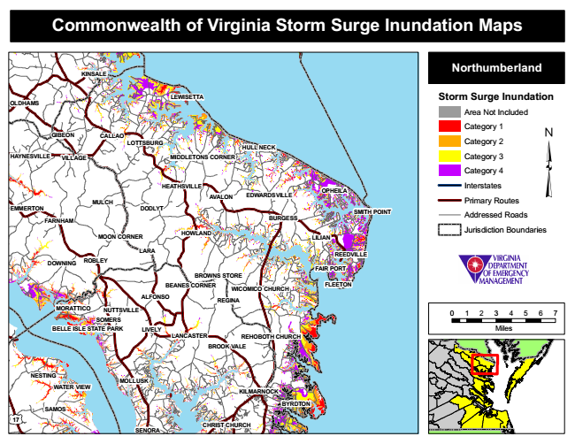

Commonwealth of Virginia Storm Surge Inundation Maps
KINSALE
Northumberland
OLDHAMS
LEWISETTA
Storm Surge Inundation
Area Not Included
Category 1 GIBEON
CALLAO
LOTTSBURG
HULL NECK
Category 2
HAYNESVILLE
VILLAGE
MIDDLETONS CORNER
Category 3
Category 4
MULCH
HEATHSVILLE
AVALON
EDWARDSVILLE
OPHEILA
Interstates
Primary Routes EMMERTON
DODLYT
Addressed Roads
HOWLAND
Jurisdiction Boundaries
REEDVILLE
FAIR PORT BROWNS STORE
FLEETON
MORATTICO
0 1 2 3 4 5 6 7 SOMERS BELLE ISLE STATE PARK
Miles LANCASTER
NESTING
MOLLUSK WATER VIEW
17
SENORA
CHRIST CHURCH
SMITH POINT FARNHAM
BURGESS
MOON CORNER
DOWNING
ALFONSO
BYRDTON
LILIAN
LARA
SAMOS
ROBLEY
REGINA
LIVELY
BEANES CORNER
WICOMICO CHURCH
NUTTSVILLE
REHOBOTH CHURCH BROOK VALE
KILMARNOCK